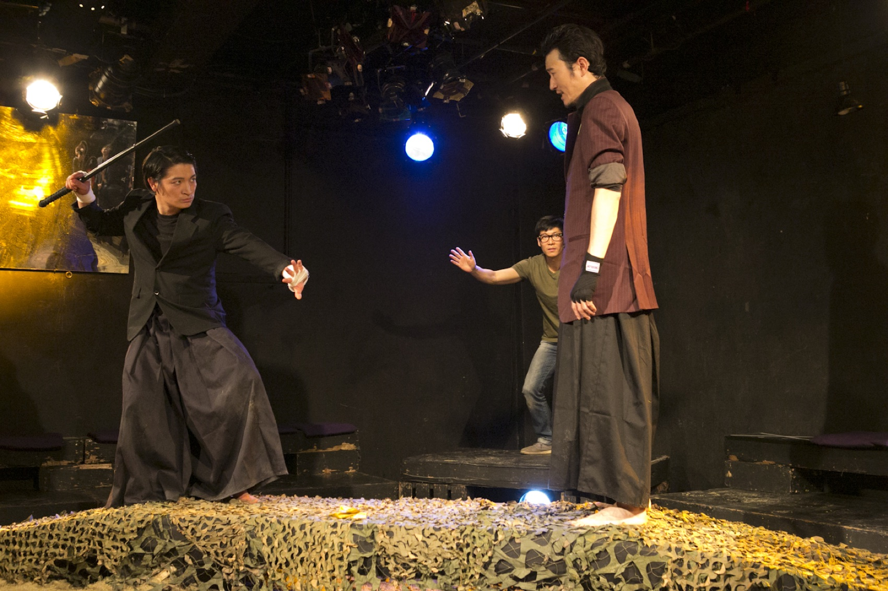
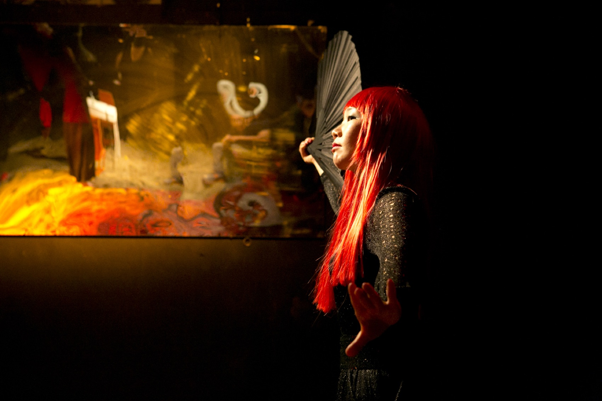
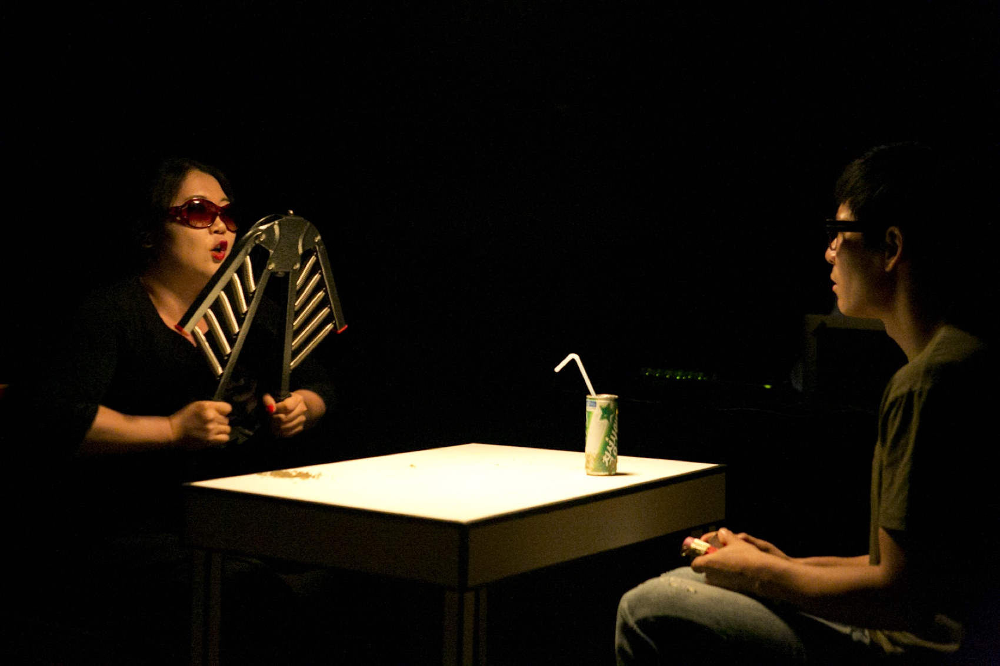
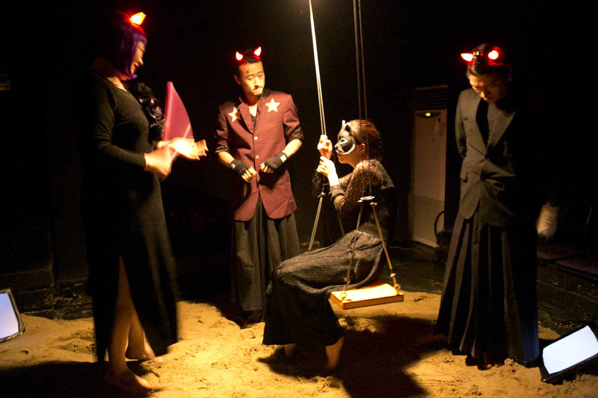
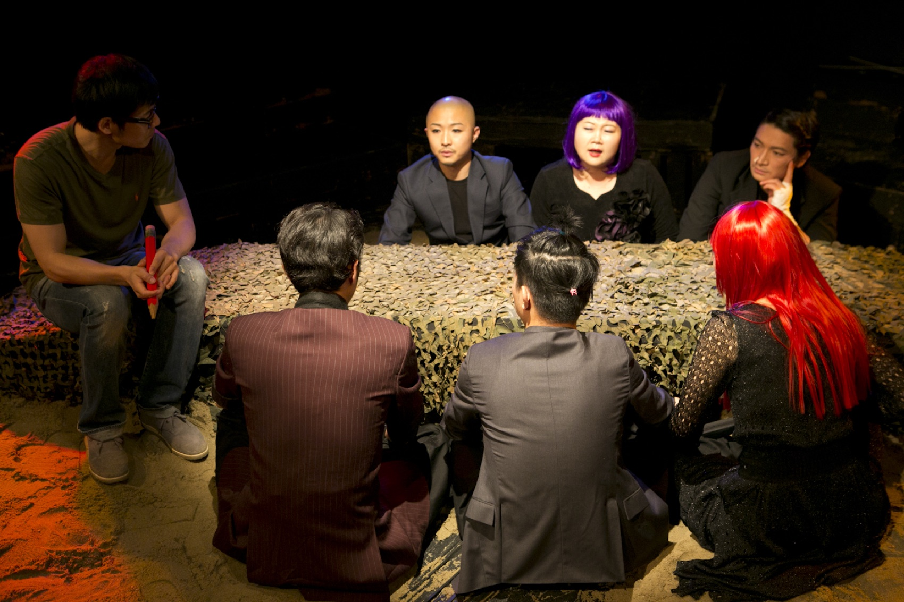
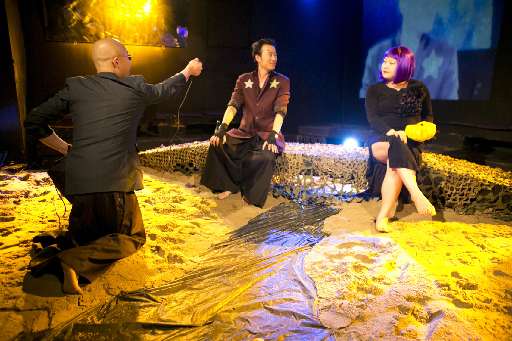
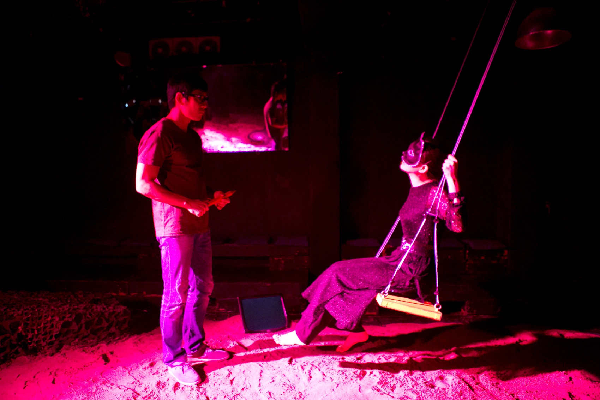
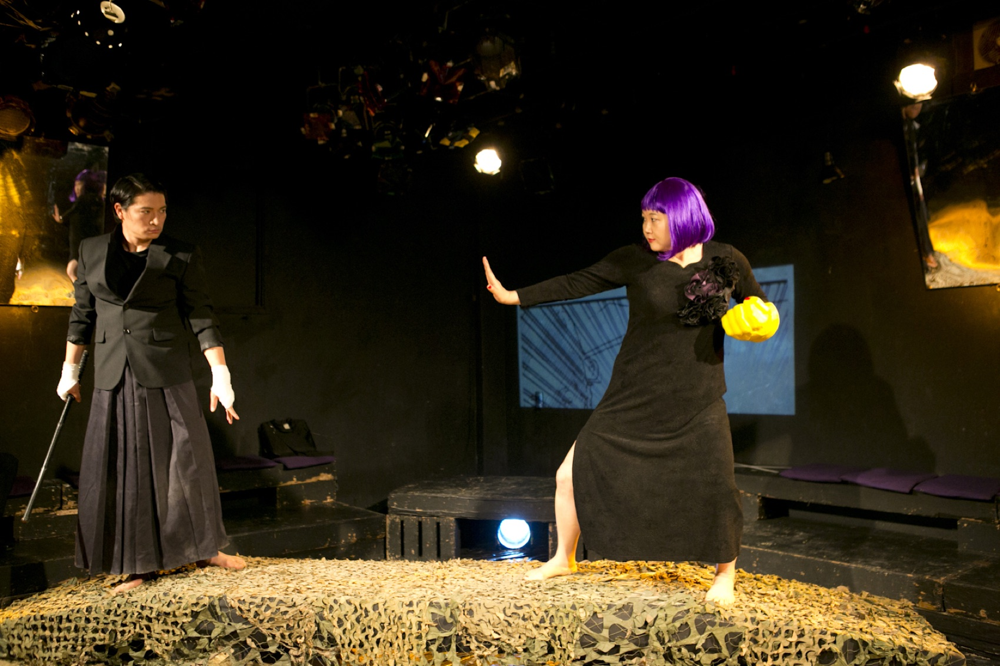

Performance — 2013
Bloody Fight of
Martial Group무림파혈전 · 극단 거미
무협 웹툰을 그리던 작가에게 정체 모를 전화가 걸려온다 — “만화 잘 보고 있습니다.” 국가보안법이 사람 안에 심어놓는 공포와 자기검열을, B급 무협 활극의 형식으로 되묻는 연극.
A webtoon artist drawing a martial-arts serial gets a call from someone who will not give a name — ‘I’ve been enjoying your comic.’ A play that asks, in the form of a B-movie wuxia romp, about the fear and self-censorship the National Security Act plants inside a person.
이 작품은 연극실험실 혜화동1번지 5기동인이 「국가보안법」을 주제로 연 2013 봄페스티벌에 올린 다섯 편 중 하나입니다. 홍석진이 쓰고 김제민이 연출했으며, 무명의 웹툰 작가 최진호가 야심차게 연재를 시작한 무협만화 ‘무림파혈전’이 이야기의 축입니다.
네티즌의 평가는 야박하기만 하다. 간신히 연재를 이어가던 어느 날, 자신의 정체를 밝히지 않는 누군가가 전화를 걸어 칭찬을 건넨 뒤 — 만화 내용에 사상적인 문제가 있다며 수정을 요구합니다. 기분이 상한 진호는 전화를 끊어버립니다. 그러나 이후 알 수 없는 불안감에 사로잡히고, 평소 먹이를 주던 길고양이가 집 앞에서 죽은 채 발견되자 그 불안은 극도의 공포로 변합니다. 가족과 지인에게 전화를 걸어 안부를 확인하고, 그저 우연한 사고일 뿐이라고 애써 합리화하려 하지만 마음처럼 되지 않습니다. 결국 그는 웹툰의 내용을 고쳐야 하는 것은 아닐까 하는 갈등에 빠집니다.
무대는 두 세계를 오갑니다. 모래와 그물이 깔린 무협의 강호 — 하혈랑과 임조현이 검을 겨루고 천하제일비무대회가 열리는 만화 속 세계와, 형광등 아래 작은 탁자 하나가 놓인 현실의 세계. 만화가 현실을 잠식하고 현실이 만화를 고쳐 쓰는 동안, 작품이 던지는 질문은 하나로 좁혀집니다 — 저항이냐 순응이냐.
The work was one of five staged at the 2013 Spring Festival of the Theater Laboratory Hyehwa-dong 1st’s fifth-generation company, held on the theme of the National Security Act. Written by Hong Seok-jin and directed by Kim Jae Min, it turns on an unknown webtoon artist, Choi Jin-ho, and the martial-arts serial he has ambitiously begun. Readers are unkind. Then one day a caller who will not identify himself offers praise — and asks for changes, saying the comic has an ideological problem. Jin-ho hangs up, offended; afterwards an unplaceable dread takes hold. When the stray cat he had been feeding is found dead at his door, the dread turns to terror. He phones family and friends to check they are safe; they are. He tries to reason it away as coincidence and cannot. In the end he is caught in the question of whether he should rewrite the comic. The stage moves between two worlds: the sand-and-net wilderness of the wuxia serial, where swordsmen duel and a grand tournament is called, and the real world of a single small table under a bare light. As the comic eats into life and life rewrites the comic, the question narrows to one — resist, or comply.
- 작
- Written by
- 홍석진 Hong Seok-jin
- 연출
- Directed by
- 김제민 Kim Jae Min
- 출연
- Cast
- 이석호(작가 최진호) · 레지나(곽수영) · 조판수(임조현/임정풍) · 신용숙(천지연) · 이준규(하혈랑) · 정동민(백록담) · 심우섭(송유민)
- Lee Seok-ho · Regina · Cho Pan-su · Shin Yong-sook · Lee Jun-gyu · Jung Dong-min · Shim Woo-seop
- 무대
- Set
- 봉하일
- 음악
- Music
- 김병제
- 조명
- Lighting
- 성미림
- 무술감독
- Fight direction
- 이국호
- 사진·영상
- Photo & video
- 이지락
- 제작
- Produced by
- 극단 거미
- Theatre Company Geomi
- 키워드
- Keywords
- self-censorship · wuxia · webtoon · B-grade comedy
연출의 글 — 김제민
Director’s statement — Kim Jae Min
“이거 잡혀가는 거 아냐”
“Are we going to get taken in for this?”
작품을 준비하면서 내심 ‘이거 잡혀가는 거 아냐’ 하는 불안감이 있었습니다. 어디서 튀어나온 자기검열인지 알 수 없습니다. 분명 시대가 달라졌는데, 표현의 자유를 억압당한 경험이 있는 것도 아닌데, 무의식중에 생겨난 이 두려움은 어디서 기인한 것인지. 하지만 분명 두려움이 있었습니다.
스터디가 필요했습니다. 2012년 12월부터 극단 워크숍, 작가 워크숍, 세미나를 진행했습니다. 국가보안법에 대해 알아갈수록 하나로 설명할 수 없는 복잡한 심경들이 떠올랐습니다 — 황당하다, 억울하다, 무섭다, 웃기다, 슬프다, 쓸쓸하다, 짜증난다, 시대착오적이다.
민변 이광철 변호사의 세미나를 들으면서 국가보안법이 B급 코미디 같다는 생각을 했습니다. 숲을 바라보는 사람과 나무 사이에 서 있는 사람의 차이일까요? 어쨌든 국가보안법은 외면할 수 없는 우리의 아픈 역사이자 코미디입니다.
Preparing the work, I carried a quiet unease — ‘are we going to get taken in for this?’ I cannot say where that self-censorship came from. The times have plainly changed; I have never had my freedom of expression suppressed. Yet the fear arose unbidden. There was fear, unmistakably. We needed to study. From December 2012 we ran company workshops, writers’ workshops, seminars. The more we learned about the Act, the more tangled the feelings became — absurd, unjust, frightening, funny, sad, lonely, irritating, anachronistic. Listening to the lawyer Lee Kwang-cheol of MINBYUN, I came to think the National Security Act was like a B-grade comedy. Is it the difference between one who looks at the forest and one standing among the trees? Either way, the Act is a painful history we cannot look away from — and a comedy.
비극보다 더 안타까운 현실에 대해,
코미디보다 더 코믹한 현실에 대해,
그리고 작품을 하는 창작자의 태도에 대해,
연극이라는 매체가 관객에게 전달할 수 있는 확장성에 대해 고민해본다.On a reality more pitiful than tragedy,
on a reality more comic than comedy,
on the stance of the one who makes the work,
and on how far theatre can carry all this to an audience — I keep thinking.
- 작가 노트 — 홍석진
- Writer’s note — Hong Seok-jin
- 거의 모든 참여자들이 국가보안법이 무엇인지 전혀 모르고 있었기에 스터디에 가까운 워크숍이었습니다. 정치적으로 편향되지 않기 위해 다양한 관점의 책을 함께 읽었습니다. 흥미로웠던 점은 국가보안법 그 자체라기보다 그것을 공부하는 우리들의 태도였습니다. ‘이러다가 우리도 잡혀가는 것 아닐까’ — 농담에 가까운 말이었지만 모두들 일말의 두려움을 갖고 있는 게 분명했습니다.
- Almost none of us knew what the Act actually was, so the workshop was closer to a study group. To avoid political bias we read books from many positions together. What was interesting was not the Act itself but our own attitude while studying it. ‘Might we get taken in for this?’ — nearly a joke, but everyone plainly carried a trace of fear.
- 무의식중에 자기검열을 하고 위축되었습니다. 자연스럽게 테마가 좁혀졌고, 보편적인 눈높이를 고려해 웹툰 작가라는 설정을 떠올렸습니다.
- We censored ourselves without noticing, and shrank. The theme narrowed of its own accord — and, reaching for an everyday vantage, I arrived at the setting of a webtoon artist.
리서치 — 금지된 작품들
Research — the works that were banned
제목은 어느 금서에서 왔다
The title came from a banned book
워크숍은 국가보안법이 예술작품에 적용된 실제 사건들을 조사하는 데서 출발했습니다. 그중 하나가 1981년 무협소설 「무림파천황」입니다. 출판되었으나 국가보안법 위반 혐의로 판매가 금지되었고, 작가 박영창은 징역 2년형을 선고받았습니다. 무협소설이 사람을 감옥에 보낸 것입니다. 이 작품의 제목 「무림파혈전」은 여기에서 왔습니다.
The workshop began by researching real cases in which the Act was applied to works of art. One was the 1981 martial-arts novel Murimpacheonhwang — published, then banned from sale as a violation of the Act, its author Park Young-chang sentenced to two years. A wuxia novel sent a man to prison. This play’s title comes from there.
- 함께 조사한 사건들
- Other cases studied
- 홍성담 — 1989년 평양축전에 보낸 걸개그림 「민족해방운동사」. 5개 지역 화가 30여 명이 나누어 그린 11컷을 슬라이드로 북에 보냈다는 혐의로 구속, 공동제작한 화가들도 연달아 구속되었다.
- Hong Sung-dam — the 1989 banner painting ‘History of the National Liberation Movement,’ eleven panels painted across five cities by some thirty artists and sent north on slide film. He was arrested, and the co-creators after him.
- 안성금 — 2001년 ‘노컷(무삭제)전’ 출품 예정작 「아, 한반도」. 작품이 전시되기도 전에 경찰이 시안만 보고 “전시하면 국보법 위반으로 체포하겠다”고 통보했다.
- An Seong-geum — ‘Ah, Korean Peninsula,’ slated for the 2001 ‘No Cut’ exhibition. Before it was ever hung, police saw the draft and told the artist that showing it would mean arrest.
과정 — 워크숍에서 무대까지
Process — from workshop to stage
두려움을 어떻게 무대에 올릴 것인가
How do you stage a fear
2012년 12월 워크숍에서 시작해 2013년 6월 개막까지, 주인공의 자리는 여러 번 옮겨 다녔다.
From the December 2012 workshops to the June 2013 opening, the protagonist kept changing seats.
01
스터디 워크숍
Study workshops
2012년 12월부터 극단 워크숍·작가 워크숍·세미나를 이어갔다. 참여자 대부분이 국가보안법을 잘 몰랐기에 편향을 피하려 여러 관점의 책을 함께 읽었다.
Company workshops, writers’ workshops and seminars ran from December 2012. Since most participants barely knew the Act, they read books from opposing positions to avoid bias.
02
웹툰 작가 초고
The webtoon draft
개발 문서 ‘중심질문’에는 작가가 웹툰 「무림파혈전」을 연재하며 외압을 받는 구조가 잡혀 있다. 강북무림을 북으로 읽고, 무공비급의 이름을 ‘국보법경’으로 붙여 보는 시도까지 적혀 있다.
The development document ‘Central Questions’ already frames an artist serialising the webtoon under outside pressure — down to reading the northern martial world as the North, and naming the secret manual the ‘National Security Sutra.’
03
극단으로 옮긴 판본
The theatre-company version
한때 무대는 극단 자체가 되기도 했다. 신입단원 진호가 연극 ‘무림파혈전’에 출연하고, 협박 전화를 받은 연출가가 내용을 바꾸며, 유출자를 색출하려 ‘극단보안법’을 발동한다는 판본이다.
At one point the setting became the company itself: a new member cast in a play called ‘Murimpahyeoljeon,’ a director who rewrites after a threatening call, and a ‘Company Security Act’ invoked to root out the leak.
04
최종 판본
The staged version
무대에 오른 것은 다시 웹툰 작가의 이야기였다. 주인공의 이름은 최진호로 정해졌고, 만화 속 강호와 작가의 현실이 나란히 놓였다.
What reached the stage was the webtoon artist again. The protagonist settled as Choi Jin-ho, and the world of the comic was set alongside the artist’s own.
05
압력밥솥
The pressure cooker
공포는 해독의 형식으로 온다. 빨간 티셔츠를 입었냐고, 운동을 좋아하냐고, 김치찌개를 좋아하냐고 묻는 전화 — 그리고 압력밥솥. “밥솥을 빼면 압력! 압력을 받고 있으니 처신을 잘하라는 경고!” 아무 말에서나 암호를 읽어내는 이 과잉해석이 작품의 웃음이자 공포다.
The fear arrives as decoding. Calls asking whether he wore a red shirt, whether he likes exercise, whether he likes kimchi stew — and a pressure cooker. ‘Drop the cooker and you have pressure! You’re under pressure — a warning to watch yourself!’ This over-reading of anything into code is at once the play’s comedy and its dread.
06
연습장의 디렉션
Notes from the room
연출디렉션에는 이런 메모들이 남아 있다. “전화벨이 울리는데 작가가 너무 알고 받는다 — 벨 음향이 조금 늦게 나오도록 수정. 등장인물들도 전화벨 소리를 의심해야 됨.” 바둑 두는 장면의 리액션은 더 크게, 비무대회는 더 빠르게.
The direction notes keep lines like: ‘the phone rings and the artist answers as though he already knows — delay the ring; the characters should suspect the sound too.’ Bigger reactions in the go-game scene; run the tournament faster.
공연 기록 — 연극실험실 혜화동1번지, 2013
Performance record — Theater Laboratory Hyehwa-dong 1st, 2013






